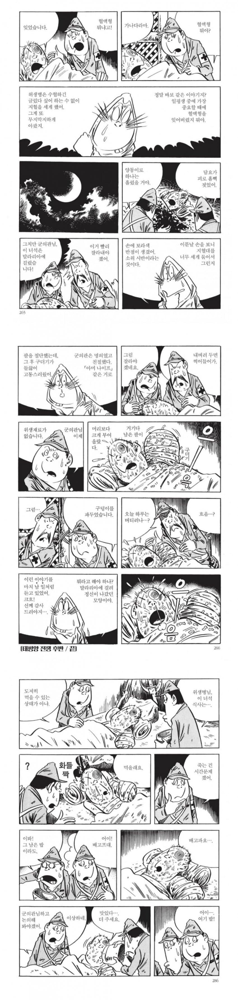
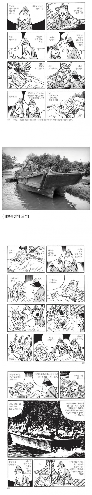
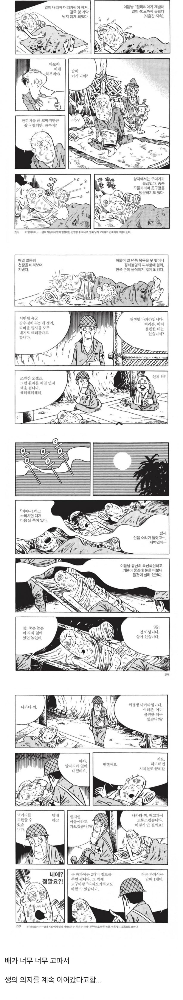
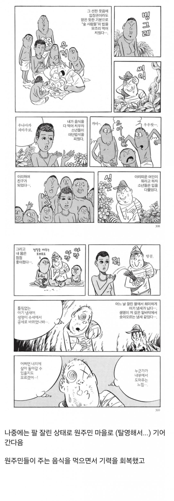
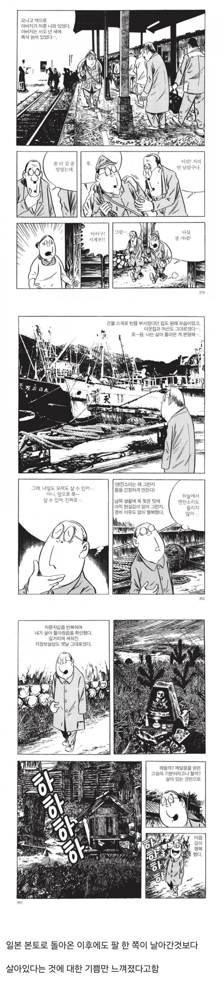
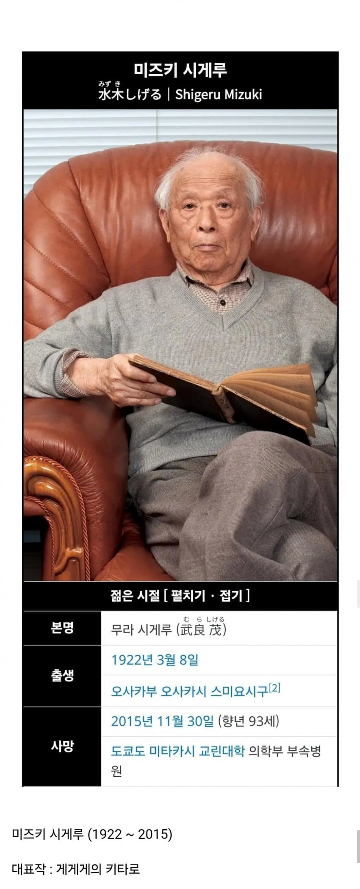
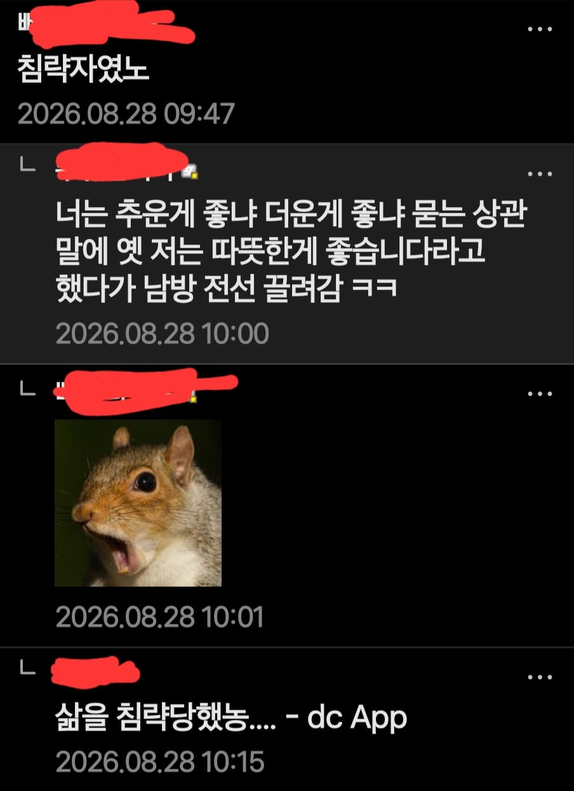

그나마 끌려간곳이 안정적으로
자급자족 가능한곳
작품명 :







그나마 끌려간곳이 안정적으로
자급자족 가능한곳
작품명 :
살놈들이 먹는건지 먹어서 사는건진 모르겠지만
아무튼 생사의 기로에 섰을때도 먹는사람들은 대부분 살더라
아니 어떻게 산거야 ㅋㅋㅋ 미쳤네
배가고프다는건 몸이 살아있다는 증거인듯
진짜 밥먹는게 엄청나게 중요하다 싶음.
아픈 동물들도 어떻게든 밥먹은 애들보면 꼭 살아나더라고.
단순히 에너지공급의 의미를 넘어서 살겠다는 의지의 표명이라고 생각함.
뇌 : 오냐 너의 의지 잘 알았다,에너지원만 공급해준다면 육신의 제어와 복구는 내가 해 주마
ㄹㅇ 수의사분들도 죽을병 걸린 동물들 회생 징후는 식사라 그러시드라
ㅇㅇ.
밥을 못먹으면 죽는다 = 진리인듯.
병아리 꽤나 키워봤는데, 밥 먹는 데서 밀리는 녀석들은 대게 죽더라고
ㅇㅇ 살아남는놈이 밥먹는게 아니라, 어떻게든 밥먹는놈이 살아남는 느낌.
일본은 미친새끼들인게, 우리나라한테도 개지랄이였지만 자국국민들한테도 개지랄하는..
알류샨열도 미군의 포위섬멸 작전으로 키스카섬에 고립된 6000명
대본영 - 황국 군인답게 장렬히 최후를 맞이해라
카와세 시로 중장 - 아니 형들 시발 진짜 미친새끼들이야?
지옥에서 팔잃고 생환하셔서
한팔로 그림을........정말 경이로운 작가분.....
한국에도 정발한 총원 옥쇄하라 읽어보면 진짜 개좆같은 환경에서 어떻게 살아돌아왔나 싶더라.
같이있던 사람들 죄다 죽고 거의 혼자 살아돌아왔던데 운이 좋은 사람이야.
진짜 살아남은거네.
할배 눈빛이 개빡세긴하네
저분은 우익들에겐 추하게 살아남은주제에 전쟁반대하고 일본제국의 은혜를 모른다며 욕쳐먹음 웃김 ㅋㅋ
라고말하는 놈들을 바로 태평양전선에 투입
예전에 일본 넷우익하고 그런 걸로 시비가 붙은 적이 있는데...
전쟁이 터지면 너는 참전할 거냐고 물으니까...
존나 어물쩡거리면서 "자위대는 프로페셔널한 군대이니까 학생들 강제 징집한 조ㅅ징 군대는 나 없어도 이길 수 있다."라고 하더라고...
그래서 전황이 진짜로 나빠진 경우... 예를 들어서 네 고향까지 한국군이 들어오면 어쩔래? 그래도 안싸울거야? 라고 물으니까 자기는 다른 사람들에게 피해가 될테니까 절대 군대 안간다고 징징대더라..
안가요->잽랜드에서 그런게있을리가 없잖니
일본제국을 싫어한다면 미즈키 시게루 작품은 꼭 읽어라
다시는 일본제국같은게 없어야한다고 생각할거다
그 국체가 어디건간에 일본제국같은건 다시는 없어야한다
인자강
풍성충..
전장에는 적과 아군이 있는게 아니라, 누군가에게 등 떠밀려 끌려온 자들이 생존하려 발버둥치고 있었다.
이번 러시아전으로 여실히 들어났지. 전쟁을 원하는 놈들은 전쟁터로 안간다는걸..
전쟁을 원하는 자들은 전쟁터에 가지 않는다.. 명문이다
밥은 먹어야제...
키타로 작가였구나
야...뭐라 말이 안 나오네
진짜 개 처참하네... 일본 제국은 자국민들에게도 얄짤이 없었나보네..